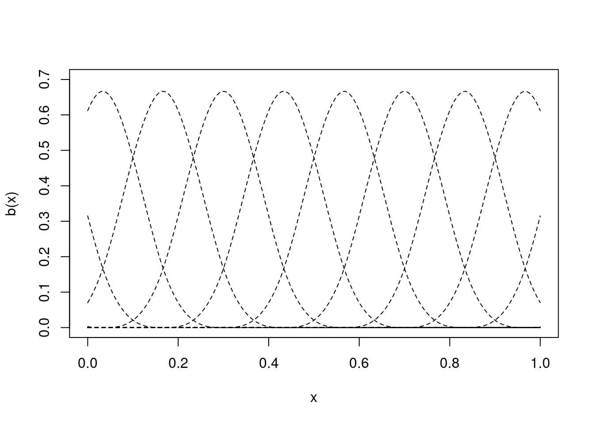

library(MASS)
library(ggplot2)
library(patchwork)
ggplot(mcycle) +
geom_point(aes(x=times, y=accel)) +
labs(x="Time (ms)", y="Acceleration (g)") +
theme_minimal()Adaptive smoothing in mgcv
When we set-up a smoother in a GAM, we have a penalty that is of the following matrix form: \[\begin{equation} \lambda \boldsymbol{\beta}^\intercal \mathbf{S} \boldsymbol{\beta}. \label{pen} \end{equation}\] where we have the fixed elements (usually integrals of derivatives of the basis functions) in \(\mathbf{S}\) and the smoothers’ coefficients in \(\boldsymbol{\beta}\). is the smoothing parameter which we also estimate and controls the influence of the penalty on the fit (usually, we have the above expression substracted from the restricted or marginal likelihood for REML or ML).
The smoothing parameter, \(\lambda\), tells us about how wiggly to make our functions. A \(\lambda\) of 0 will mean that the whole penalty term is evaluated as zero, meaning the smother will overfit to the data. Letting \(\lambda\) get larger and larger, we end up with the penalty dominating the fit. In that case we retrieve only the nullspace terms: those bits of the basis which don’t have derivatives (so aren’t affected by the penalty).
This all works well in general, up to a point. What happens when the amount of smoothing we need changes with the covariate? In other words: what if we need the amount of smoothing to be adaptive?
Most of this is based off Sections 5.33 and 5.3.5 of SN Wood (2017) as well as the ?smooth.construct.ad.smooth.spec manual page, with a bit more explanation. See the last section for links to other approaches.
An overused example: motorcycle crash data
Every expanation of adaptive smoothing uses the same tired example. This article is no different. The “simulated motorcycle crash data” found in MASS::mcycle seems to originate (in the statistics literature) in Silverman (1985) (which is a great paper!). The data originally come from a rather grim experiment (Schmidt et al., 1981)1 where cadavers were given helments and hurled at walls to see what happens on impact. For our purposes, we are interested in the accelaration change recorded on sensors on the helmet.
From a smoothing perspective, the data are interesting because there are clearly different variances at different times. We see a very flat start up to the impact, followed by rapid decelleration, then rebound to acceleration, then movement back to the zero line again (but with much more spread).
We can fit the data using a regular smoother and see what happens:
library(mgcv)Loading required package: nlmeThis is mgcv 1.9-3. For overview type 'help("mgcv-package")'.b <- gam(accel ~ s(times), data=mcycle)
plot_mpreds <- function(model){
xx <- data.frame(times = seq(0, 60, length.out=400))
pp <- predict(model, newdata=xx, se=TRUE)
xx$accel <- as.vector(pp$fit)
xx$upper <- as.vector(pp$fit + 1.96*pp$se.fit)
xx$lower <- as.vector(pp$fit - 1.96*pp$se.fit)
ggplot() +
geom_point(aes(x=times, y=accel), data=mcycle) +
geom_ribbon(aes(x=times, ymin=lower, ymax=upper),
colour="grey60", alpha=0.5,
data=xx) +
geom_line(aes(x=times, y=accel), data=xx) +
labs(x="Time (ms)", y="Acceleration (g)") +
theme_minimal()
}
plot_mpreds(b)What we see in this simple fit is some annoying misbehaviour in either extreme of the data. Why is the smoother decreasing at from zero, only to increase again before impact? At the other end, why do we see such wiggly behaviour followed by increase? These features aren’t supported by the data.
This is really down to the smoothing parameter being optimized for the bulk of the data, which is quite wiggly (and where we fit well). We are stuck with the \(\lambda\) which does best “on average”, so our model sucks at either end of the data.
But, what if we could make \(\lambda\) a function of the time covariate?
Adaptive smoothing: tools we need
Let’s imagine a very simple case, where we have data where the first half is very wiggly, then the second half is less wiggly. We would then want a separate smoothing parameter for the first half of the data (which was smaller, giving more wiggles) and another for the second half (larger, giving fewer wiggles). The first smoothing parameter would just apply to the first half of the basis functions and the latter to the second half (assuming we have a nice evenly-spaced basis; more on that in a moment).
We might want to go beyond that and move to multiple \(\lambda\)s over the range of the data. We need some tools to build such a thing.
Multiple penalties
First we need to build a penalty for such a term. We can extend \(\eqref{pen}\) to the case where we have multiple penalties for a single term. In which case we write \[\begin{equation} \sum_j \lambda_j \boldsymbol{\beta}^\intercal \mathbf{S}_j \boldsymbol{\beta}, \label{multpen} \end{equation}\] where we have split the penalty matrices and smoothing parameters and indexed them by \(j\). This idea should be fairly familiar as it’s how we create the total penalty for models with multiple terms. Just in this case, we’re using it for a single term.
P-splines
We need a basis to build our terms. For efficiency and interpretability purposes, mgcv uses P-splines (Eilers and Marx, 1996) to construct adaptive smoothers. Since they’re a bit different from other splines, let’s just review them for a moment.
“P-splines” in the sense used in mgcv are Marx and Eiler’s “B-splines”: they are a B-spline basis with a “difference” penalty (rather than an integral penalty). This makes things much faster for computation.
B-spline basis
The B-spline basis is an interesting and useful one. We setup the basis functions by recursion, so an order \(m+1\) basis function is to multiply some fixed thing (which we’ll avoid writing-out here because I don’t think it adds much to the explanation) by the \(m^\text{th}\) order basis function. The \(-1^\text{th}\) order basis functions are just 1 inside a range and 0 outside.
We place the B-spline basis at knots (the knot is the centre of the basis function) and a basis function of order \(m+1\) (where \(m=2\) is a cubic spline, for boring definitional reasons) will be non-zero over the \(m+3\) adjacent knots. This, along with the regular placement of knots (more on that in a moment) means that B-splines are a local basis (that their effects are felt only in the vicinity of their knot). This makes them easy to interpret (compared to, say, thin plate splines). Figure 1 shows some cubic B-spline basis functions.
# taken from Wood (2017)
bspline <- function(x,k,i,m=2){
# evaluate ith b-spline basis function of order m at the values
# in x, given knot locations in k
if (m==-1){ # base of recursion
res <- as.numeric(x<k[i+1]&x>=k[i])
}else{
# construct from call to lower order basis
z0 <- (x-k[i])/(k[i+m+1]-k[i])
z1 <- (k[i+m+2]-x)/(k[i+m+2]-k[i+1])
res <- z0*bspline(x,k,i,m-1)+ z1*bspline(x,k,i+1,m-1)
}
res
}
# knot locations
nk <- 16
knts <- seq(-0.5, 1.5, length.out=nk)
# grid for evaluation
xx <- seq(0, 1, length.out=200)
plot(c(0,1), c(0, 0.7), type="n",
xlab="x", ylab="b(x)")
for(i in 1:nk){
lines(xx, bspline(xx, knts, i, 2), lty=2)
}

More in-depth information on B-splines can be found in classic texts like DeBoor (1978). For more on their implementation in mgcv you can see Section 5.3.3 of SN Wood (2017) and Simon N Wood (2017).
P-spline difference penalties
Now we could use the regular formulation to create a penalty for these P-splines: we can take derivatives and integrate over the range of the covariate. Instead, we can do something a bit faster and more efficient. This speed an efficiency comes at a cost of accuracy, but this often doesn’t matter much.
Rather than the derivative-based penalties we usually use for splines, we’re going to use a difference-based penalty. Where the differences are between the neighbouring \(\beta\)s in the model.
The first order P-spline penalty is \[\begin{equation} \mathcal{P}_1 = \sum_{k=1}^K (\beta_{k+1}-\beta_k)^2 \label{bs-firstorder-pen} \end{equation}\] where we have \(K\) basis functions (or knots if you think about the world that way). Note we still square the difference, just as we do in a derivative-based penalty.
We can re-write \(\eqref{bs-firstorder-pen}\) in matrix-form by writing a matrix \(\mathbf{P}\) such that: \[ \mathbf{P} = \pmatrix{-1 & 1 & 0 & 0 & 0 & \cdots\\ 0 & -1 & 1 & 0 & 0 & \cdots\\ 0 & 0 & -1 & 1 & 0 & \cdots\\ & & & \ddots & \ddots & & } \] which just reflects the \(\beta_{k+1}-\beta_k\) term, taking the previous value away from the current one. Indeed, \[ P\boldsymbol{\beta} = \pmatrix{\beta_2-\beta_1\\ \beta_3-\beta_2\\ \beta_4-\beta_3\\ \vdots}, \] and in order to get our penalty \(\mathcal{P}_1\), we just need to take the product \(\mathbf{P}^\intercal P\) \[ \mathcal{P}_1 = \boldsymbol{\beta}^\intercal \mathbf{P}^\intercal \mathbf{P}\boldsymbol{\beta} = \sum_{k=1}^K (\beta_{k+1}-\beta_k)^2. \]
Our 2nd order penalty is \[\begin{equation} \mathcal{P}_2 = \sum_{k=1}^K (\beta_{k-1} -2\beta_k +\beta{i+1})^2 \label{bs-secondorder-pen} \end{equation}\] which gives us the following \(\mathbf{P}\) matrix: \[ \mathbf{P} = \pmatrix{1 & -2 & 1 & 0 & 0 & \cdots\\ 0 & 1 & -2 & 1 & 0 & \cdots\\ 0 & 0 & 1 & -2 & 1 & \cdots\\ & & & \ddots & \ddots &\ddots & }. \]
Now, these matrices are extremely fast to compute in R, because we just need to use the diff function on a diagonal matrix:
(P1 <- diff(diag(10), differences=1)) [,1] [,2] [,3] [,4] [,5] [,6] [,7] [,8] [,9] [,10]
[1,] -1 1 0 0 0 0 0 0 0 0
[2,] 0 -1 1 0 0 0 0 0 0 0
[3,] 0 0 -1 1 0 0 0 0 0 0
[4,] 0 0 0 -1 1 0 0 0 0 0
[5,] 0 0 0 0 -1 1 0 0 0 0
[6,] 0 0 0 0 0 -1 1 0 0 0
[7,] 0 0 0 0 0 0 -1 1 0 0
[8,] 0 0 0 0 0 0 0 -1 1 0
[9,] 0 0 0 0 0 0 0 0 -1 1(P2 <- diff(diag(10), differences=2)) [,1] [,2] [,3] [,4] [,5] [,6] [,7] [,8] [,9] [,10]
[1,] 1 -2 1 0 0 0 0 0 0 0
[2,] 0 1 -2 1 0 0 0 0 0 0
[3,] 0 0 1 -2 1 0 0 0 0 0
[4,] 0 0 0 1 -2 1 0 0 0 0
[5,] 0 0 0 0 1 -2 1 0 0 0
[6,] 0 0 0 0 0 1 -2 1 0 0
[7,] 0 0 0 0 0 0 1 -2 1 0
[8,] 0 0 0 0 0 0 0 1 -2 1No differentiation, no integration. Lovely.
Back to adaptive smoothing…
Now we have our bits to construct the adaptive smoother, we can actually do that.
We can first think about decomposing the penalty as if it were a B-spline basis, so we have \(\mathbf{S} = \mathbf{P}^\intercal\mathbf{P}\). To weight this we could make a diagonal matrix with the weighting (or penalty) for each basis function in each element. Let’s call that \(\text{diag}(\boldsymbol{\lambda})\). We would then write: \[ \mathbf{S} = \mathbf{P}^\intercal\mathbf{P} = \mathbf{P}^\intercal \text{diag}(\boldsymbol{\lambda}) \mathbf{P} \] we can see that this recovers the regular single penalty when we set \(\mathbf{\lambda}\) to a single value, so we would have \(\text{diag}(\boldsymbol{\lambda})=\lambda \mathbf{I}\), so: \[ \mathbf{P}^\intercal \text{diag}(\boldsymbol{\lambda}) \mathbf{P} = \mathbf{P}^\intercal\lambda \mathbf{I}\mathbf{P} =\lambda \mathbf{P}^\intercal\mathbf{I}\mathbf{P} =\lambda \mathbf{P}^\intercal\mathbf{P}. \]
Our aim is to make the smoothing parameter into a function that is smooth over the covariate. Fortunately we already have a tool for making smooth functions: splines. So via basis expansion: \[\begin{equation} \boldsymbol{\lambda} = \mathbf{B}\boldsymbol{\gamma} \end{equation}\] where \(\mathbf{B}\) is the design matrix for the smoothing parameter (made of, you guess it, B-splines) and \(\boldsymbol{\gamma}\) are the associated parameters. We’ll call this our penalty basis. Let the number of basis functions/knots used for \(\boldsymbol{\lambda}\) be \(k_\lambda\) (hence the number of columns in \(\mathbf{B}\)).
By the local property of the B-spline basis, we know that the columns of \(\mathbf{B}\) will have non-zero entries around a given knot, then be zero elsewhere (assuming that \(\mathbf{B}\) is evaluated over a sequence of evenly spaced points along the covariate).
# knot locations
nk <- 10
nd <- 100
knts <- seq(-0.5, 1.5, length.out=nk)
# grid for evaluation
xx <- seq(0, 1, length.out=nd)
#bspline <- function(x,k,i,m=2){
XX <- expand.grid(xx = xx,
knts = knts[2:6])
XX$p <- unlist(lapply(2:6, bspline, x=xx, k=knts, m=2))
ggplot(XX) +
geom_tile(aes(x=knts, y=xx, fill=p)) +
scale_y_reverse() +
scale_fill_gradient(low="#fff", high="#ff0000") +
coord_equal() +
theme_void() +
theme(legend.position="none")We can show that \(\text{diag}(\boldsymbol{\lambda}) = \text{diag}(\mathbf{B}\boldsymbol{\gamma}) = \sum_j \boldsymbol{\gamma}_j \text{diag}(\mathbf{B}_{.j})\) with basic linear algebra.2 So we can now write: \[\begin{equation*} \boldsymbol{\beta}^\intercal \mathbf{P}^\intercal \text{diag}(\boldsymbol{\lambda}) \mathbf{P} \boldsymbol{\beta} = \boldsymbol{\beta}^\intercal \mathbf{P}^\intercal \text{diag}(\mathbf{B}\boldsymbol{\gamma}) \mathbf{P} \boldsymbol{\beta} = \sum_j \boldsymbol{\gamma}_j \boldsymbol{\beta}^\intercal \mathbf{P}^\intercal \text{diag}(\mathbf{B}_{.j}) \mathbf{P} \boldsymbol{\beta} \end{equation*}\] Finally, let \(\mathbf{S}_j = \mathbf{P}^\intercal \text{diag}(\mathbf{B}_{.j}) \mathbf{P}\), we have that our penalty is: \[ \sum_j \gamma_j \boldsymbol{\beta}^\intercal \mathbf{S}_j \boldsymbol{\beta}, \] which is exactly the same form as \(\eqref{multpen}\) but with the smoothing parameters \(\gamma_j\) being the coefficients for our penalty basis.
mgcv can only really3 use one kind of penalty and that’s the quadratic form we have in \(\eqref{multpen}\). So, its’ rather nice that we can work our adaptive penalty into this form. That means we can use all the usual tools in mgcv and not worry about extra fitting stuff.
Note that there is no penalty attached to \(\boldsymbol{\lambda}\)’s parameters \(\boldsymbol{\gamma}\) themselves we just have a continuous function, not any control on how wiggly it can be (though the size of \(k_\lambda\) will constrain this to some extent).
Adaptive smoothing in practice
Okay, with the maths out of the way, we can go back to our “motorcycle”4 dataset.
Given the above hoops, the setup of adaptive smooths in mgcv is very simple. We just need to set the basis to "ad" and we’re good to go:
b_ad <- gam(accel ~ s(times, bs="ad"), data=mcycle)
(plot_mpreds(b) + ggtitle("Thin-plate regression splines")) +
(plot_mpreds(b_ad) + ggtitle("Adaptive smoothing via P-splines"))Figure 3 shows a comparison of adaptive smoothing and our initial try with thin-plate regression splines. Not only does the adaptive smoother capture the flatness in either extreme of the data, we also have narrower confidence intervals.
More options
There are a few things that we can change in the adaptive smoothing specification.
- Basis: we can use a fairly restricted set of basis functions can be used for the smoother (P-splines
"ps", cyclic P-splines"cp", cyclic cubic splines"cc"or cubic splines"cr"), the penalty basis can only be a P-spline or cyclic P-spline. These are set via thext=list(...)option tos(), specifically the$bselement, as a charactervector(e.g.,xt=list(bs=c("cp", "cp"))for cyclic smoother and penalty). - Penalty basis size: this is controlled by the
margument tos(). Note that this can’t be too big, as the model will get slow very quickly. It’s best to start small and increase slowly. Due to the local nature of B-splines, we are estimating the \(\gamma_j\) parameters from a much reduced subset of data. From the help file “settingm=10for a univariate smooth of 200 data is rather like estimating 10 smoothing parameters, each from a data series of length 20.”
Note that adaptive smoothers can’t be used with gamm or as marginals in tensor product smooths. We can make 2-dimensional version of these smoothers (and fit that in mgcv) for cases where we have changing smoothness in space.
Other approaches and further reading
This approach is neat because it fits into the general mgcv scheme of fitting GAMs. That means we get to use all the other tools that are in mgcv. That said, lots of people have thought about this problem.
An early approach to this problem is suggested in Ruppert and Carroll (2000). Their approach is similar in some ways, but doesn’t use the nice properties of P-splines (for example they model the penalty basis on the \(\log_e\) scale, which seems weird given the B-spline basis functions are positive). It feels a bit less elegant that what I describe above.@baladandayuthapani_spatially_2005 and Crainiceanu et al. (2007) build on this approach further. (lang_bayesian_2004?) and Jullion and Lambert (2007) provide fully Bayesian approaches but again don’t quite get to the elegance of the above. Yue et al. (2014) propose a much more fancy version, again Bayesian, applying the SPDE approach in INLA. I need to think about that last paper more, but the approach involves things like formulating stochastic differential equations and words like “Galerkin approximation” so it will have to wait until a future date.
Thanks
Time to think about this was partly funded by BioSS “topic group”: “what we talk about when we talk about random effects”. Thanks also to John Addy for extremely useful discussions.
References
Crainiceanu, C. M., Ruppert, D., Carroll, R. J., et al. (2007) Spatially Adaptive Bayesian Penalized Splines With Heteroscedastic Errors. Journal of Computational and Graphical Statistics, 16, 265–288. DOI: 10.1198/106186007X208768.
DeBoor, C. (1978) A Practical Guide to Splines. Springer New York.
Eilers, P. H. and Marx, B. D. (1996) Flexible smoothing with B-splines and penalties. Statistical science, 11, 89–102.
Jullion, A. and Lambert, P. (2007) Robust specification of the roughness penalty prior distribution in spatially adaptive Bayesian P-splines models. Computational Statistics & Data Analysis, 51, 2542–2558. DOI: 10.1016/j.csda.2006.09.027.
Ruppert, D. and Carroll, R. J. (2000) Spatially-adaptive Penalties for Spline Fitting. Australian & New Zealand Journal of Statistics, 42, 205–223. DOI: 10.1111/1467-842X.00119.
Schmidt, G., Mattern, R. and Schüler, F. (1981) Biomechanical investigation to determine physical and traumatological differentiation criteria for the maximum load capacity of head and vertebral column with and without protective helmet under the effects of impact. EEC Research Program on Biomechanics of Impacts, Final report, Phase III, Project G, 5.
Silverman, B. W. (1985) Some Aspects of the Spline Smoothing Approach to Non-Parametric Regression Curve Fitting. Journal of the Royal Statistical Society. Series B (Methodological), 47, 1–52.
Wood, S. N. (2017) Generalized Additive Models. An Introduction with R. 2nd ed. Texts in Statistical Science. CRC Press.
Wood, Simon N. (2017) P-splines with derivative based penalties and tensor product smoothing of unevenly distributed data. Statistics and Computing, 27, 985–989. DOI: w.
Yue, Y. R., Simpson, D., Lindgren, F., et al. (2014) Bayesian Adaptive Smoothing Splines Using Stochastic Differential Equations. Bayesian Analysis, 9, 397–424. DOI: 10.1214/13-BA866.
Footnotes
Though this report doesn’t appear to be findable, one can find a rather gruesome NATO conference proceedings from around the same time by the same authors which appears to demonstrate the same ideas here↩︎
The first element of the column vector \(\mathbf{B}\boldsymbol{\gamma}\) is \(\mathbf{B}_{11}\lambda_1 +\mathbf{B}_{12}\lambda_2 + \ldots = \sum_j \lambda_j \mathbf{B}_{1j}\) and so on for the second row etc.↩︎
There is a more complicated way but I’ll save that for another article.↩︎
Read “traumatic head injury”↩︎